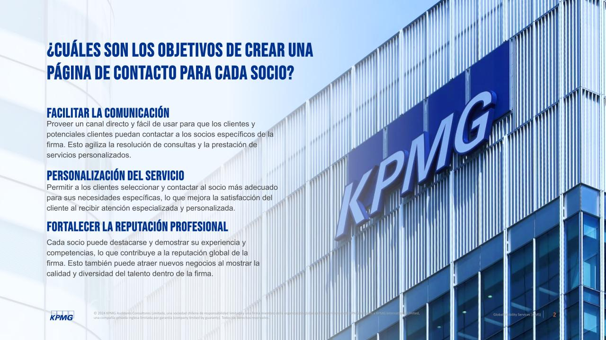
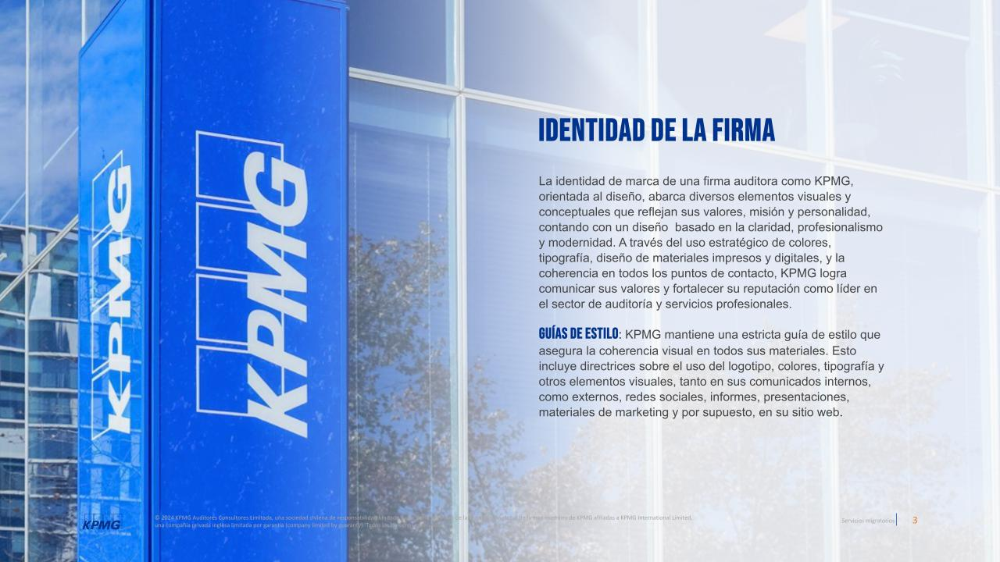

Proyecto: Currículum digital para directorios KPMG
KPMG Chile requería una solución digital que permitiera visibilizar de forma clara y moderna los perfiles de sus directorios ejecutivos en su sitio institucional. El objetivo era reflejar la trayectoria y experiencia de sus líderes de manera accesible, alineada con los estándares visuales y corporativos de la firma.
Gracias a este desarrollo, se logró una presentación más estructurada, profesional y responsiva del directorio, mejorando tanto la navegación como la experiencia de los usuarios que acceden a esta sección desde distintos dispositivos.


Prototipo en Figma
Navega por el wireframe de alta fidelidad del proyecto.
¡Pruébalo tú mismo!
Explora el proyecto funcionando en tiempo real y descubre su potencial.